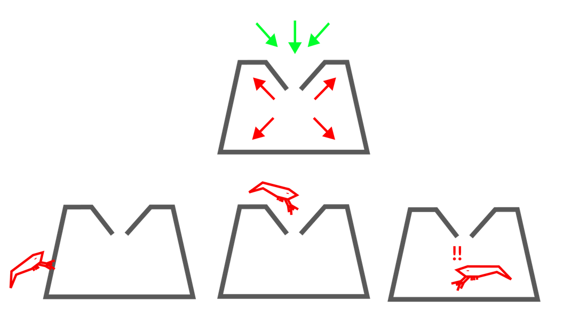

What is lock-in?
Lock-in is where some technological, political, or institutional feature of the world is held stable for a long time. Possibly for centuries. Possibly forever.
How lock-in works
It comes from irreversibility
It emerges wherever a change is much easier to make than to undo.
It feeds itself
Once embedded, locked-in elements reinforce themselves and resist change.
It happens at every scale
From the technology choices of a single organisation up to global ideologies.
It can last a very long time
Years, decades, or millennia.
What lock-in looks like
The QWERTY keyboard
The classic harmless example. QWERTY is the standard layout because the typewriters that used it became popular, and switching now costs too much.
Stable totalitarianism
Regimes have always ended with their rulers. AI systems do not age or die, so an AI-enabled leader could hold power for centuries.
AI-driven power concentration
Control over AI could give a few people lasting leverage over humanity's direction, with persistent monopolies over resources and labour.
Ideological stasis
A dogmatic belief system could dominate culture, locking in norms that reinforce themselves.
The lobster pot
Easy to get in. Hard to get out.
Entering is easy. By the time the problem is clear, the way back is gone.

Lock-in risk is serious and neglected
Potentially catastrophic
Could affect a substantial number of individuals.
Neglected
Few organisations or individuals track or model lock-in risk.
A moral problem
It could perpetuate or create suffering and prevent progress.
A global problem
It could affect institutions, states, nations, or the world.